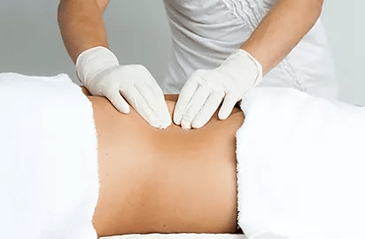
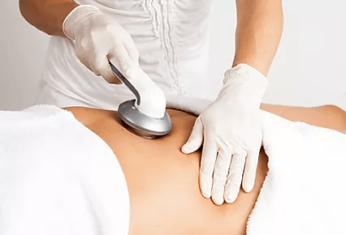
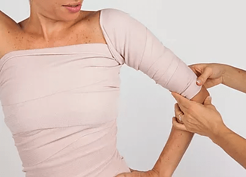
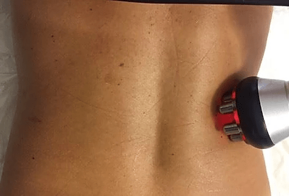

Ivone Paixão é especialista e coach em massoterapia e estética corporal, licenciada pelo estado de Nova Iorque e possui certificações americanas e brasileiras. Atua há mais de 15 anos no mercado oferecendo serviços estéticos inovadores, eficazes e seguros.
Trabalhos desenvolvidos com foco em resultado, qualidade, confiabilidade e ética afim de contribuir para o equilíbrio físico e mental dos seus clientes.
Contato
Entre em contato conosco pelo WhatsApp. Basta clicar no ícone abaixo. É simples, fácil e rápido!
Com o passar do tempo a pele passa por desgastes, consequentemente o aparecimento de rugas, manchas de idade e olheiras é inevitável devido à diminuição da elasticidade do tecido. O tratamento de Rejuvenescimento Facial através de Radiofrequência é um ótimo aliado para diminuição de todos esses sintomas que afetam o rosto e auxilia na restauração da juventude da pele.
O tratamento facial por meio de Radiofrequência adicionado ao uso do ultrassom auxilia na limpeza profunda do tecido e traz efeitos indutores que de forma indolor e eficaz rejuvenescem a pele do rosto.
Abaixo relacionamos os benefícios que o tratamento pode trazer para o cliente:
Remoção de bactérias profundas dos poros
Melhora a circulação sanguínea e linfática
Remoção do excesso de água e resíduos sob a pele
Esfoliação das células mortas da pele
Clareamento de olheiras
Eliminação de toxinas associadas ao envelhecimento e fadiga do tecido
Promove a quebra da celulite e gordura do tecido
Aumenta a oxigenação e liberação de nutrientes para as células, o que renova a vitalidade da pele
Aumenta a atividade enzimática através da estimulação mitocondrial
Dermaroller e Ácido Hialurônico
A aplicação do Ácido Hialurônico junto do Dermaroller ajuda a estimular o colágeno do tecido. O Dermaroller é um aparelho composto por um rolinho em acrílico com microagulhas em sua superfície que ao ser aplicado na pele faz com que o Ácido Hialurônico penetre na camada superficial da epiderme promovendo sua reestruturação.
Esse tratamento combinado com massagens e outros princípios ativos reafirmantes trazem excelentes resultados para a pele do cliente.
Esse tratamento é muito utilizado tendo em vista que o período de cicatrização é curto, cerca de 5 dias, e também não danifica a pele. Após algumas sessões desse tratamento percebe-se que a pele fica macia, com menos linhas de expressão e mais resistente.
O procedimento é praticamente indolor visto que as microagulhas são delicadas e fazem microfuros na pele. Esse método pode ser um grande aliado aos tratamentos de recuperação da pele após exposição ao sol no verão e à neve no inverno. Abaixo relacionamos os benefícios que o tratamento pode trazer para o cliente:
Diminuição da flacidez do tecido
Correção de rugas leves
Suavização de linhas de expressão
Rejuvenescimento facial
Diminuição de cicatrizes de acne
Drenagem Linfática Facial
Algumas pessoas pensam que a drenagem linfática está associada apenas ao corpo, porém esse tratamento pode trazer muitos benefícios para o rosto do cliente. Além de ativar a circulação sanguínea na região da face, esse tratamento promove o relaxamento dos músculos da face e auxilia a eliminação das toxinas (causadoras das linhas finas e marcas de expressão).
Abaixo relacionamos os benefícios que o tratamento pode trazer para o cliente:
Diminuição da retenção de líquidos
Redução de hematomas decorrentes de traumas, doenças e cirurgias
Diminuição de olheiras e marcas de expressão
Revitalização da pele do rosto
Drenagem Linfática para Gestantes
A combinação entre drenagem linfática e gestação pode trazer muitas melhorias para esse período tão delicado. A drenagem estimula a circulação venosa e linfática, reduzindo a retenção de líquido e diminuindo os inchaços típicos da gravidez, além de estimular a lactação, evita varizes e alguns problemas relacionados com as mudanças hormonais, tais como enxaqueca, insônia, constipação intestinal e cansaço.
Durante o tratamento, as grávidas passam a se conhecer mais e aceitam melhor a nova identidade corporal. Desta forma, a mulher passa a ter aumento do bem-estar emocional, fortalecendo ainda mais o vínculo com o bebê.
Abaixo relacionamos os benefícios que o tratamento pode trazer para o cliente:
Diminuição da retenção de líquido e inchaços típicos da gravidez
Estimulação da lactação
Dessensibilização das mamas
Prevenção e combate de varizes
Redução de câimbras e sensação de cansaço nas pernas
Auxílio no combate às celulites e estrias
Alívio de tensão e redução de dores musculares
Aumento na sensação de relaxamento
Diminuição do estresse
Melhoria da imunidade do organismo
Estimula a produção de linfócitos pelos gânglios linfáticos
É importante ressaltar que a drenagem linfática deve ser feita por profissionais capacitados, pois a técnica mal executada pode estimular as contrações uterinas e causar até a precipitação do parto a partir do sexto mês de gestação. Podendo também comprometer a circulação e causar hematomas.
Lembramos que o tratamento é contraindicado para grávidas com hipertensão não controlada, insuficiência renal, trombose venosa profunda, infecções de pele e erupções cutâneas.
Drenagem Linfática Pré-Operatório
O sucesso da cirurgia não depende somente do processo cirúrgico. Com a realização da drenagem linfática no período pré-operatório, o resultado estético é mais satisfatório e previne o aparecimento de possíveis complicações. O tratamento pré-operatório tem os seguintes objetivos:
Hidratar a pele
Melhorar a circulação sanguínea e linfática
Melhorar a absorção da pele de produtos nutritivos e hidratantes
Conscientizar a respiração e postura do cliente
Relaxamento física e mental
Alívio de tensão e ansiedade
Recomendamos que o tratamento seja iniciado 3 meses antes da realização da cirurgia.
Drenagem Linfática Pós-Operatório

No período pós-operatório a drenagem linfática é um dos tratamentos mais aplicados no campo de medicina estética. Essa drenagem pode ser realizada isoladamente ou associada deve ser iniciado o mais breve possível após o encaminhamento e liberação por parte do médico. O tratamento pós-operatório tem os seguintes objetivos:
Reduzir edemas e hematomas
Diminuir a retenção de líquidos
Diminuir a probabilidade de ocorrência de fibrose
Previnir possíveis complicações cirúrgicas
Proporcinar conforto, bem estar e diminuição de dores
Melhorar a circulação sanguínea e linfática
Auxiliar na restauração dos tecidos
Em alguns casos também são indicados tratamentos como Endermologia, Ultrassom, entre outros. Esses tratamentos tem ação analgésica, anti-inflamatório e antiedematosa, auxiliando na quebra de fibroses acumuladas no tecido conjuntivo dérmico. Utiliza-se também o aparelho vibratório Celutex com o objetivo de modelar o corpo.
Recomendamos que o tratamento seja realizado até o quarto mês após a cirurgia.
Massoterapia Rejuvenescedora
A Massoterapia Facial Rejuvenescedora tem como foco combater a flacidez facial, deixando a pele mais firme e hidratada. Atua também na redução de rugas e seus efeitos são benéficos e duradouros. O tratamento é realizado por meio da massoterapia manual aliada à tecnologia do sistema de Ultra-som Infravermelho. Abaixo estão relacionados alguns dos benefícios que esse tratamento traz:
Remoção as células mortas
Melhora na circulação do tecido
Ameniza as olheiras e bolsas sob os olhos
Renova a coloração e elasticidade natural da pele
Diminuição na expressão “cansada” do rosto
Auxilia no rejuvenescimento facial
Tratamento Pós-Parto

O tratamento pós-parto é focado principalmente na barriga da mulher, tendo em vista que essa região sofreu grandemente durante o período de gestação, cerca de 9 meses. O foco do tratamento é redução não só de estrias localizadas, mas também a flacidez do tecido. Outro objetivo alcançado é a redução da retenção hídrica e da cicatriz da cesárea.
Junto desse tratamento recomendamos que seja realizado tratamentos como a Drenagem Linfática para melhora na retenção de líquidos e o Microneedling para diminuição do aspecto visual das estrias e cicatrizes provenientes do parto.
Microneedling
O Microneedling (Microagulhamento) é um dos mais modernos tratamentos de estética existentes no mercado.
Esse tratamento é feito com microagulhas de aço inoxidável que podem ser ajustadas de 0,25 a 1,5 mm. As microagulhas provocam microperfurações quase imperceptíveis na pele induzindo a regeneração e formação de colágeno e elastina, trazendo como resultado uma pele mais firme e rejuvenescida. Esse procedimento contribui também com uma melhor circulação sanguínea aumentando a atividade dos nutrientes na área.
Junto das microperfurações é aplicado um sérum contendo substâncias indicadas para as necessidades de cada cliente. Essas substâncias são absorvidas com grande eficácia e rapidez pelas camadas mais profundas do tecido.
Abaixo relacionamos os benefícios que o tratamento pode trazer para o cliente:
Melhoria da textura da pele
Rejuvenescimento da pele
Redução de cicatrizes, inclusive de acne e de queimaduras
Diminuição de rugas (leves, médias e profundas)
Diminuição de produção sebácea excessiva
Aumento da penetração e ação de substâncias ativas
Diminuição de estrias e celulites
Crioterapia
A crioterapia junto da envoltura com faixa ou plástico "PVC" permite a limpeza e desintoxicação do organismo promovendo uma melhoria no equilíbrio metabólico do cliente, auxiliando o corpo a expelir o excesso de fluido e a reduzir a celulite.
A crioterapia trabalha com um envoltório de resfriamento que atua também na redução de mediadas do cliente. O tratamento é muito eficaz em casos de tecido flácido, proveniente de envelhecimento, perda de peso ou após a realização de lipoaspiração. A crioterapia também é utilizada para perda de peso após a gravidez.
Abaixo relacionamos os benefícios que o tratamento pode trazer para o cliente:
Pele mais firme
Anti-inflamatório
Desintoxicação
Emagrecimento
Estimular o metabolismo
Aumento do metabolismo e da circulação
Pele melhorada e definição muscular
Melhoria na elasticidade da pele
Durante a sessão provavelmente o cliente sentirá frio o que pode ser um pouco desconfortável caso a tolerância à essa sensação seja baixa.
Recomendamos que sejam realizadas sessões duas vezes por semana durante três meses para que o cliente obtenha melhores resultados.
Thermo Active

O tratamento Thermo Active é feito com ingredientes ativos que produzem calor, ou seja, elevam a temperatura corporal de forma prolongada que dura até 24 horas após a aplicação. O aumento de temperatura causa aceleração no metabolismo do paciente auxiliando na redução efetiva de medidas e melhorias na celulite.
O resumo desse tratamento consiste nas seguintes etapas:
Realização da Massagem Redutora
Aplicação do creme redutor e Thermo Active nas regiões de celulite e gordura localizada
Aplicação no corpo do plástico PVC ou faixas
Tratamento Corporal com Radiofrequência

O Tratamento Corporal com Radiofrequência trabalha com a elevação da temperatura interna do tecido promovendo o aumento da circulação sanguínea em direção ao tecido conectivo, diminuindo a concentração de toxinas. O aquecimento localizado estimula a produção de colágeno e o aumento do metabolismo que provoca quase instantaneamente a contração das fibras e a tonificação da pele.
Esse tratamento é indicado para rejuvenescimento do tecido, fortalecimento da pele com flacidez nas regiões do pescoço, partes internas dos braços e coxas, papada, queixo duplo entre outras partes do corpo.
Abaixo relacionamos os benefícios que o tratamento pode trazer para o cliente:
Remoção de bactérias profundas dos poros
Melhora a circulação sanguínea e linfática
Remoção do excesso de água e resíduos sob a pele
Esfoliação das células mortas da pele
Clareamento de olheiras
Eliminação de toxinas associadas ao envelhecimento e fadiga do tecido
Promove a quebra da celulite e gordura do tecido
Aumenta a oxigenação e liberação de nutrientes para as células, renovando a vitalidade da pele
Aumenta a atividade enzimática através da estimulação mitocondrial
Massagem Anti-Celulítica
A massagem anti-celulítica é uma forma eficiente para tratamento da celulite, considerando que ela aumenta a circulação sanguínea e linfática do local, além de diminuir os nódulos da celulite, melhorando assim o aspecto visual.
A massagem é realizada por meio de aparelhos específicos e cremes com princípios ativos que fazem com que a pele fique mais macia, lisa e com mais brilho. Realizando o tratamento de forma intensiva os resultados são perceptíveis na melhoria da celulite e na redução de medidas corporais.
Nas primeiras sessões de massagem anti-celulítica é possível que a região fique dolorida e algumas vezes apresente alguns hematomas.
Aplicação de gelo no dia seguinte à massagem é necessária para diminuição dos sintomas e do desconforto do paciente.
Recomendamos que junto dessa massagem sejam realizadas sessões de drenagem linfática para se obter um resultado mais satisfatório.
Massagem de Definição Corporal
A Massagem para Definição Corporal trata-se do massageamento de todo o corpo, com movimentos intensos, rápidos e repetitivos, que ativam a circulação, trabalhando a gordura localizada e auxilia na eliminação de toxinas. Essa massagem se resume na união de três das mais eficientes técnicas para redução de medidas:
Drenagem Linfática
Massagem Modeladora
Roll Up
A drenagem linfática atua significantemente na redução de medidas corporais eliminando líquidos presentes nos tecidos pelo organismo. A Massagem Modeladora é aplicada com o objetivo de quebrar as cadeias de gorduras, oxigenando os tecidos e aumentando o tônus muscular corporal. O rolo trabalha as curvas e na definição da silhueta corporal.
Tratamento Modelador para Áreas Localizadas
O Tratamento Modelador para Áreas Localizadas é uma técnica que utiliza manobras rápidas e intensas sobre a pele, aplicando pressão através de movimentos de amassamento e deslizamento. Entre os principais benefícios estão a melhora da oxigenação dos tecidos, a quebra da cadeia de gordura e a melhora do tônus muscular.
Essa massagem tem como finalidade esvaziar as células adiposas que formam o tecido onde as gorduras se acumulam. Recomendamos esse tipo de massagem para combate à celulite, flacidez do tecido, gordura localizada e redução de medidas.